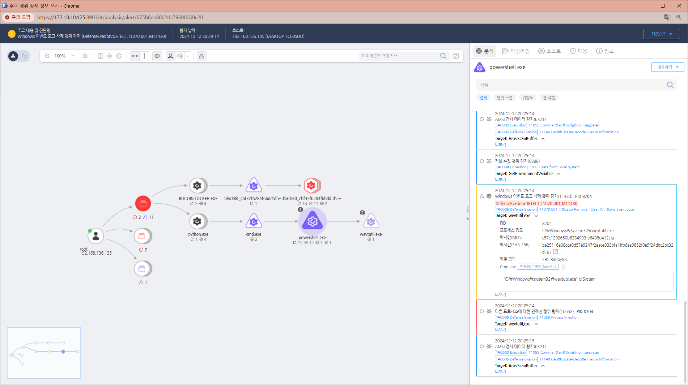

T1070.001.01 Windows 이벤트 로그 삭제
D3FEND
MITRE ATT&CK 액션을 기준으로 대응 방안을 작성
Detection
- Action : ProcessCreate AND
- target_commandline : "wevtutil" OR "cl" AND ("Aplication" OR "Security" OR "system")
Detection(EDR)

Response
공격자에 의해 PC가 제어되었을 가능성이 있으므로 호스트 네트워크를 격리합니다.
Mitigations
권한 관리
- 관리자 권한 최소화 및 계정 접근 제어.
- 로그 삭제 가능한 사용자 계정을 엄격히 제한.
로그 설정 강화
- 로그 보존 정책 설정(덮어쓰기 방지, 로그 크기 확대).
- 이벤트 로그 삭제 이벤트 감사 설정.
로그 무결성 보장
- SIEM에 실시간 로그 전송.
- WORM 스토리지 사용으로 로그 변경/삭제 방지.
탐지 및 모니터링
- 이벤트 ID 1102(로그 삭제) 및 관련 PowerShell/명령 실행 탐지.
- EDR 도구로 비정상적인 로그 삭제 행동 경고.
백업 및 복구
- 이벤트 로그 자동 백업.
- 삭제된 로그 복구를 위한 프로세스 준비.
정책 및 도구
- AppLocker 또는 WDAC으로 wevtutil 및 PowerShell 차단.
- 로그 삭제 방지를 위한 그룹 정책 강화.
교육 및 감사
- 보안 팀에 로그 삭제 시나리오와 탐지 기술 교육.
- 정기적인 보안 점검으로 로그 무결성 확인.
Affected Techniques
Action 실행시 함께 영향을 받는 다른 Techniqes
| D3FEND |
| D3-FE File Eviction |
| D3-PLA Process Lineage Analysis |